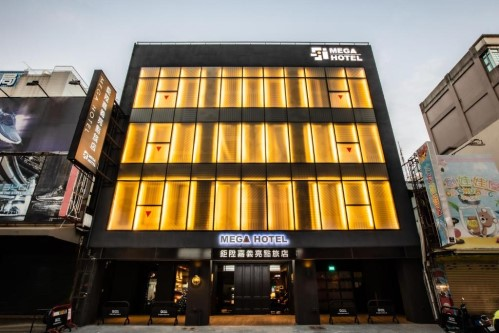
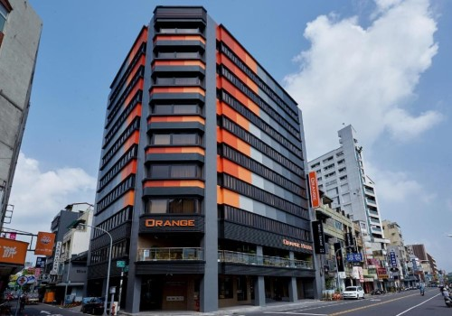
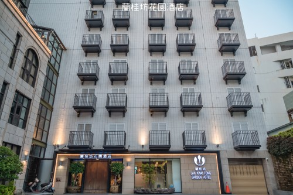

| 鉅陞嘉義亮點旅店｜福泰桔子商旅-嘉義 文化店｜蘭桂坊花園酒店 | |
| 鉅陞嘉義亮點旅店 | |
|  | 建築用線條和空間呼應在地文化肌理，在土地上寫下一個個動人故事，鉅陞以建築為座標，繪製出屬於城市藏寶圖，亮點旅店將旅行的體驗從住宿延伸至城市與文化，有別於一般親子旅店，從外觀設計到空間規劃，融合嘉義特色木材與鐵道，讓整體感更顯文化與歷史故事，並將｢有感設計｣的理念導入到房間的每一個細節，來到亮點，旅店不只是住宿，更是一種探索城市的樂趣、體驗有感的設計。 地址：嘉義市西區仁愛路560號 資料來源：:鉅陞嘉義亮點旅店官網 |
| 福泰桔子商旅-嘉義 文化店 | |
|  | 桔子商旅採用鮮明的橘色系，營造出明亮、簡潔又充滿活力的獨特風格，整體以「小而美」為主軸，讓旅客享有最舒適、安心的住宿環境，目前全台已發展出 4 個據點，皆位處火車站或捷運附近，絕佳的生活機能可說是旅客眼中最棒的旅行樞紐。 地址：嘉義市西區文化路 169 號 |
| 蘭桂坊花園酒店 | |
|  | 嘉義【蘭桂坊花園酒店】座落於嘉義市最熱鬧的【文化路夜市】內，在這裡可以隨性地體驗在地獨特的小吃美食，步行距離內即可品嘗噴水火雞肉飯、御香屋葡萄柚綠茶、郭家粿仔湯/糯米腸、林聰明魚頭、阿娥豆花、阿岸米糕等等經典小吃，且鄰近火車站、客運站、BRT站，交通便利，距離高鐵站、機場也僅30分鐘車程。嘉義是台灣的木頭原鄉，蘭桂坊花園酒店大廳特地大量運用台灣紅檜、黃檜、柚木，一走進大廳即可感受到一股寧靜安詳的木頭原味，在意呼應阿里山木業原鄉的獨有意境。館內眾多典藏的骨董文物、藝術品擺飾，搭配明朝、清朝年代家具、原木桌椅、綠意花園設計，風格清新高雅，古典中帶著新意，猶如嘉義南故宮之外的另一個文化博物館 。 地址：嘉義市西區延平街250號 |